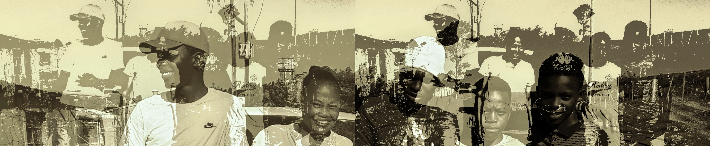
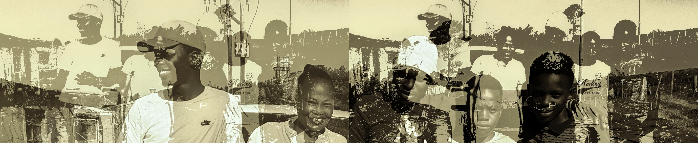
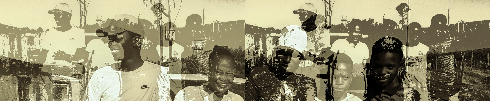

I'm Thabiso.
a programmer.
 


I'm a Web Developer based in Johannesburg, South Africa.
I have a passion for Web Development, Data Analytics and Digital Marketing.
l create Web and Mobile Applications..
I like to keep it simple. My goals are to focus on typography, content and conveying the message that you want to send.
My experience includes: formulating information delivery strategies and roadmaps; assisting with the planning and resourcing of business analytics solution implementations; presenting and facilitating training courses on business analytic tools and methodologies. I also have experience as an entrepreneur and l founded 2 startups ranging from youth development, assisting other new businesses gain a backbone and internet marketing.
As a developer, l create contect that run across multiple devices using the latest technologies available.
If you have a project that you want to get started, think you need my help with something or just fancy saying hey, then get in touch.
MESSAGE ME